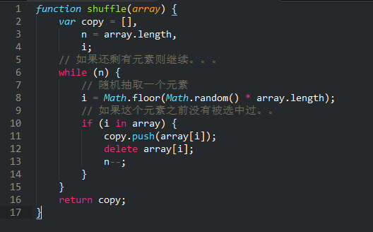
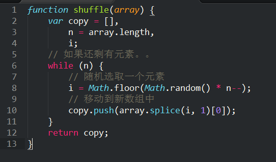
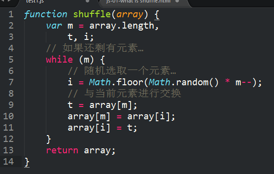

分享人：徐童
目录
1.背景介绍
2.知识剖析
3.常见问题
4.解决方案
5.编码实战
6.扩展思考
7.参考文献
8.更多讨论
洗牌算法是我们常见的随机问题，在玩游戏，随机排序时经常用到。同时它也是一道经典的面试题。
何为洗牌算法？
一个1到n的序列，随机打乱，保证每个数出现在任意一个位置的概率相同。
有哪些实现算法？
Fisher-Yates Shuffle
链接
一般化方法
假如要洗牌，那么最随机的做法无疑是从牌堆里随便抽一张出来，然后放在一边，之后从剩下的牌里重复之前的操作，直到所有牌都被抽出来放到了另一堆中。抽象到代码世界，按相同的做法，就是随机从数组里取出一个元素，保存到另一个数组，然后重复之，直到原数组中所有元素都处理掉。
演示1

缺点：即使一个序号上的元素已经被处理过了，由于随机函数产生的数是随机的，所有这个被处理过的元素序号可能在之后的循环中不断出现.
改进方法
处理完一个元素后，我们用Array的splice()方法将其从目标数组中移除同时也更新了目标数组的长度，如此一来下次遍历的时候是从新的长度开始，不会重复处理的情况了。
演示2

缺点：因为调用splice来删除数组元素会导致删除位置之后的所有元素要做shift操作来向前补充，从而达到将数组长度减小的目的，当然这是在后台自动完成的，但这无疑增加了算法的复杂度。
算法能否再次优化？
考虑不创建新的数组来保存已经抽取的元素:随机从数组中抽出一个元素，然后与最后个元素交换，相当于把这个随机抽取的元素放到了数组最后面去，表示它已经是被随机过了，同时被换走的那个元素跑到前面去了，会在后续的重复操作中被随机掉。一轮操作过后，下一轮我们只在剩下的n-1个元素也就是数组的前n-1个元素中进行相同的操作，直到进行到第一个。
演示3

不使用random函数如何实现？
更改冒泡排序.
先了解冒泡排序
思想：比较相邻两个数，如果前者大于后者，就把两个数交换位置；这样一来，第一轮就可以选出一个最大的数放在最后面；那么经过n-1轮，就完成了所有数的排序。
冒泡排序
冒泡排序视觉化
如果把冒泡排序中的比较逻辑更改一下，就可以取得不同的结果。它只能是在算法不公开的情况下，
产生一个乱序序列。
链接
参考一：由乱序播放说开了去-数组的打乱算法Fisher–Yates Shuffle
参考二：UC面试题-完美洗牌算法
1.关于洗牌算法，你有其他实现想法吗？
2.除了洗牌算法，还有哪些经典的排序算法？
十大排序算法
BY : 徐童